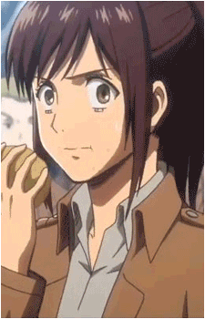

Attack on Titan |
|Maoujou|Attack on Titan| |

Anime:
Os seres humanos se depararam com a repentina aparição dos Titãs no distrito de Shiganshina após mais de um século de paz. Eren Yeager, Mikasa Ackerman-sua irmã adotiva- e seu amigo de infância, Armin Arlert, testemunham o aparecimento de uma Titã de 60 metros, o Titã Colossal, e outro menor, o Titã Blindado, que abrem uma brecha na muralha Maria. Os Titãs, em seguida, invadem a cidade e fazem uma carnificina, incluindo a morte da mãe de Eren, que é devorada diante de seus olhos. Ele então decide se vingar e matar todos os Titãs, entrando para Divisão de Exploração.
História:
Cinco anos mais tarde, os três graduados cadetes foram enviados para o distrito de Trost, uma das cidades da fronteira que se localiza na Muralha Rose, quando o Titã Colossal reaparece e faz novamente uma brecha na muralha; na batalha que se seguiu, Eren foi devorado por um dos Titãs na frente de Armin. Pouco tempo depois, um Titã aparece e ataca os outros Titãs, em vez de seres humanos; esse acaba se revelando o próprio Eren, que de alguma forma adquiriu a capacidade de se transformar em Titã. Embora seja considerado uma ameaça por alguns, ele ajuda os soldados a recuperar o distrito de Trost fechando a brecha da muralha. Depois de ser levado à justiça, ele é recrutado pela Divisão de Exploração com a supervisão da Divisão de Exploração de Operações Especiais, liderada pelo capitão Levi.
Em uma expedição para Shinganshina em busca de respostas para o mistério em torno de Eren, os soldados são atacados por um Titã Fêmea que tenta capturar Eren. Embora os soldados são capazes de capturar rapidamente a Titã Fêmea, ela se liberta e mata todos da equipe de Levi Ackerman, forçando o fim da expedição. Armin descobre que a Titã Fêmea é Annie Leonhardt, um dos cadetes que ensinaram Eren a lutar, e elabora um plano para capturá-la no distrito Stohess. A missão foi um sucesso, embora o alvo passa a proteger-se dentro de um cristal. Durante esta operação, os danos colaterais revelam que os Titãs residem dentro das paredes das muralhas.
| O autor gostava de esportes de luta, então ele se inspirou em alguns lutadores para criar um design mais intimidador para os gigantes. |
| Isayama, o autor do anime, esboçou o personagem Levi logo logo após assistir Watchmen. |
| Attack on Titan se tornou tão grande ao ponto de fazer um crossover com a Marvel Comics. |
| Com o sucesso do anime chegaram a serem feitos perfumes com a fragrância dos personagens. |
| Hajime Isayama, afirmou que seu personagem favorito é o soldado franco Jean Kirstein. |